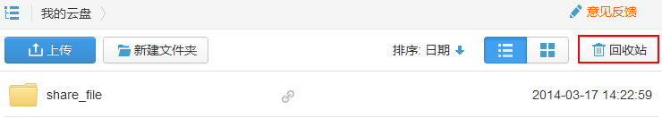

您可以像删除本地文件一样，从同步客户端中删除同步文件夹中的文件；您也可以登录StorBox网站删除文件，文件会同时从其他安装了StorBox的设备上删除。
通过同步客户端删除文件
在同步客户端中删除文件很简单，将文件拖拽到同步文件夹以外的地方即可，或者将文件删除到Windows回收站。
在同步客户端中删除的文件会出现在网站的“回收站”。
通过网站删除文件
- 登录StorBox网站。
- 选中文件或文件夹，拖拽到回收站中。
如果您想永久删除文件，请单击“回收站”，进入回收站页面删除文件。
 说明：
说明： 您也可以右键单击文件或文件夹的空白处，在右键菜单中，选择“删除”或者选择文件列表上方的，删除文件或文件夹。